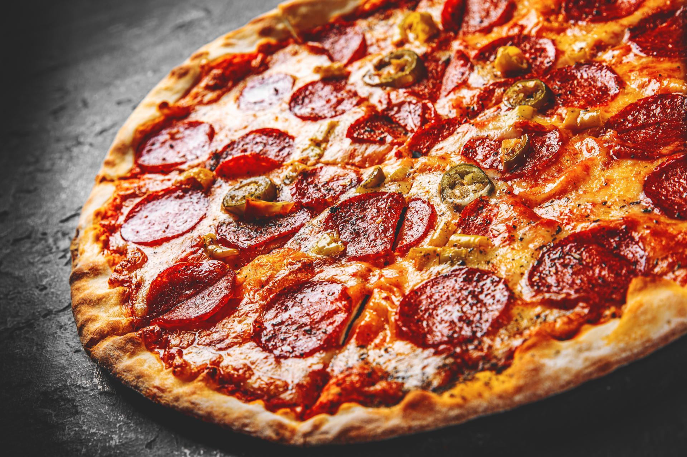

Pizza

Description
Pizza, dish of Italian origin consisting of a flattened disk of bread dough topped with some combination of olive oil, oregano, tomato, olives, mozzarella or other cheese, and many other ingredients, baked quickly—usually, in a commercial setting, using a wood-fired oven heated to a very high temperature—and served hot.
Ingridients
- Homemade Pizza Dough
- Homemade Marinara Sauce
- Tomatoes
- Fresh Mozzarella Cheese
- Fresh Basil
- Garlic
- Extra-Virgin Olive Oil.
Steps
- Place a pizza stone in the oven. Preheat the oven to 500 degrees F, allowing the stone to get hot.
- Shape the pizza dough on a floured surface into an 8-inch round, making it 1/4-inch thick. Transfer it to a pizza peel lined with parchment paper. Reshape if necessary.
- Gently brush the dough with the olive oil, then evenly spread the marinara sauce on, leaving a 1-inch border around the edge. Sprinkle the garlic over the top. Top with the mozzarella slices and tomatoes, leaving space in between.
- Slide the parchment with the crust onto the heated stone. Bake for 8-10 minutes until crust is golden and cheese is melted and bubbly.!
- Remove from oven and sprinkle the basil over the top, along with 1-2 grinds of fresh black pepper.
- Cut into wedges and serve immediately.